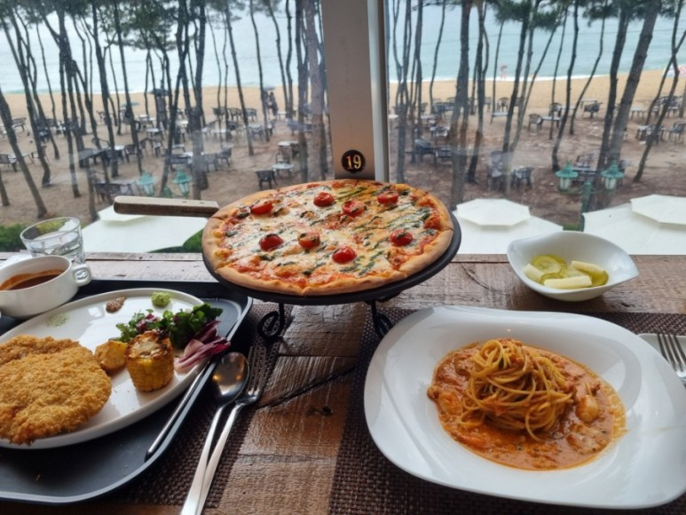

애견동반도 가능 하다고 하니 강원도 애견 여행을 하시는 분들도 너무 좋을것 같아요 입구에 들어가자마자 1층에 있는 베이커리 카페에서 퍼지는 빵냄새에 더 배가 고파졌습니다! 건물 내부가 워낙 크다보니 레스토랑을 찾아헤멨어요! 2층에 있더라구요~ 레스토랑 가실분들은 참고하시면 좋을듯 합니다 인테리어된 캔들이랑 컵 소품들 너무 이쁘지 않나요? 구매하고 싶었는데 판매하는것 같지는 않았어요... 전부 제스타일 이에요 비가 계속 와서 날씨가 우중충 해서 아쉽긴 하지만 저랑 남자친구는 바다가 보이는 자리에 앉았어요! 자리가 좀 좁긴해도 바다 보면서 먹고 싶었습니다! 비가와서 사람들이 우산쓰고 바다 구경 하는 모습도 보이네요!
 저희는 홍게로제 파스타랑, 옛날 돈까스, 피자 를 주문했어요! 피자는 잘 기억이 안나네요 ! 다른것도 전부 맛있었지만 홍게 파스타 강추해요!! 강원도에 오면 홍게를 먹어 줘야 한다니 넘 맛있어요 음식이 전체적으로 가격이 있지만... 볼거리가 많아서 좋은것 같아요! 맛두 있구요! 저희는 메인 메뉴 3개나 시켜서 다못 먹긴했습니다! 게살이 잔뜩 들어가 있어서 너무 맛있더라구요 ㅠ_ㅠ 새우도 많이 들어있구 짱!!돈까스 종류도 2가지 였는데, 일식 돈가스/옛날돈가스 저희는 옛날 돈가스로 선택했어요! 크게 2덩어리나 나와서 엄청 배가 불렀습니다! 남자친구가 맛있다고 했어요!밥을 다먹고 너무 배불렀는데... 디저트는 먹어줘야 할것 같더라구요! 참고로 레스토랑에서 메인메뉴 1개당 커피 1천원 할인권을 주더라구요~ 저희도 커피랑 빵 구매 하려고 사용 했습니다 !!